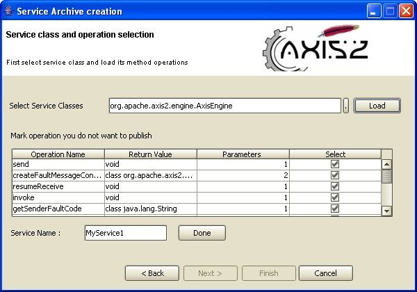

This document explains installation and usage of IDEA code generation plug-in to create service archives and generate java class files from WSDL files.
Using this IntelliJ IDEA plug-in you can either create a service archive that can be deployed as a Web services to the Axis2 or generate a java class file from a WSDL file. Installation process is described first here followed by the above mentioned operations.
First download the plug-in which is a zipped file, and extract it into plugins directory in IDEA installation directory or plugins directory in user directory (user/idea/conf/plugins). If you have correctly extracted the file you would see a directory called Axis2 in which there should be only one directory called lib containing a few .jar files.
Next step is to restart IDEA so that the changes can take place. If the plug-in has been installed correctly, when you restart IDEA you will see following icons in IDEA .

Also if you right-click on editor page of IDEA you would see a link to the same plug-in.

When you click on either one of them a window (Page 1) will appear asking you to select one of the following two options.
Page 1:

If you want to create a service archive obviously you must select 'Create a service archive' option. Like wise, if u want to generate java class file from a WSDL file you must select 'WSDL2Java codegeneration'.
Select 'WSDL2Java codegeneration' and click OK to generate code from a WSDL file. Then the following window will appear.
WSDL2Java Page 2:

To move on to the next page the WSDL file location must be given. The Browse button can be used to easily browse for a file rather than having to type the whole path.
Once the WSDL file is selected, click on Next button which will take you to the page below.
WSDL2Java Page 3:
Codegen options are to be selected here. By far this is the most important page in this wizard, which determines the characteristics of the code being generated.
Novices need not worry about these options since the most common options are defaulted. Advanced users will find it very easy to "turn the knobs" using these options.

Here's some information on the options for selection:
WSDL2Java Page 4:

You can simply browse and select the output location/path (the location at which the code is to be generated) using the Browse button. Because of the Browse button you do not need to type in the output file path.

Once an output location is selected you can click on Finish button which will generate the java class file. If code generation is successful then a message box will appear acknowledging this fact a shown above.
Select 'create a service archive' radio button on Page 1 of Axis2 IDEA plug-in wizard.
Page 1:

Service Archive Page 2:
Page below will appear asking to select archive type

In Axis2 user can deploy single service or service group. Therefore, you can select either single service archive or service group archive for archive type you want to create.
If you already have services.xml you can skip some of the steps in the wizard by selecting 'I already have services.xml' and clicking on Next button. If you do not have services.xml, select radio button 'Generate services.xml' and click on Next button, in which case the tool will create services.xml for you.
Depending on the options you selected on this page there can be three sub wizards:
1 & 2 follow the same set of steps except for some looping mechanism in the middle of the wizard.
Service Archive (sub wizards 1 & 2) Page 3:
From this page you have to select the location of the service classes directory, from where you compile output location. You do not need to type path, simply browse and select.

When you click on Next button, wizard will move to the page below
Service Archive (sub wizards 1 & 2) Page 4:
Here you select service specific external libraries and service WSDL files. In the case of a service group you can add any number of WSDL files depending on the services in the service group. If you want to add multiple WSDL files to a single service type you can do that as well.

To Add libraries first click on small (...) button to browse for library file and then click on Add button. Once added the selected file will appear in the list box.
To add WSDLs first click on small (...) button to browse for WSDL file and then click Add button to add the file to the list.
See page below:

After adding external libraries and service WSDL files click on Done button and then Next button to move to next page.
Service Archive (sub wizards 1 & 2) Page 5:
This page allows you to select service implementation class. In the case of service group, same page will be looped to select multiple service implementation classes. This process is explained in detail below.
Select a service implementation class by browsing and click on Load button to load all the public methods in that class, after which you can select the methods that you want to publish using the check boxes.

In Service Name text box you can type the name of the service you want, but remember that service name should be unique through out the system.
When you have completed this particular service click Done. In the case of a service group when you click Done button for that particular service the following dialog will appear with option to add more service(s) to a service group.

If you click Yes , you have to follow the same procedure to add some other service(s) to service group.
If you click No, Next button will enable and you can go to next page.
Note: From this point onwards the steps are similar to all the sub wizards.
Service Archive (sub wizards 1 & 2) Page 6:
This page displays the services.xml file, either the one given by you (in the case of “I already have services.xml”) or the one generated by the system (in the case of "generate services.xml")

This page is editable and provide a way to add parameters and module references to any level.
Note : When you click on either +Parameter or +ModuleRef buttons remember that corresponding text will be added to the current mouse position. Therefore click on the location you want to add the parameter or module references and then click relevant button (+Parameter or +ModuleRef).
+Parameter button:
If you click on the +Parameter button a window will appear asking to give parameter name and parameter value.

Note that you can also manually add parameters (without clicking on +Parameter button ) to any where in the document as you wish.
+ModuleRef button:
Like wise, adding module references can be done by clicking on +ModuleRef button in the page. You have to type the name of the module to be engaged as shown in the following figure.

When you complete this page press the Next button to go to final page.
Service Archive (sub wizards 1 & 2) Page 7:

Next step is to select output file location, the location in which archive file should be created.
In the Archive Name textbox, type the name of the archive file you want to place. This name will finally become the service group name.
Note : Do not include file extension when you type archive name. System will generate that for you.
When you are done, click the Finish button. If everything has been done successfully you will see following message.

Note: Pages 6 & 7 of sub wizards 1 & 2 are common to sub wizard 3 from its page 3 onwards.
In the case where services.xml is already available, the steps are as follows.
Service Archive (sub wizard 3) Page 3:

This page allows you to select both location of services.xml and the location of service classes directory. Click Select buttons and browse the file system to find required document and location.
Click on Next button which will take you to a page which allows you to edit services.xml in the same manner as 'Sub Wizard 1 & Sub Wizard 2' section's Page 6 - edit service descriptors. Note that Sub Wizard 3 from this point takes the same pages as 6 to 7 of Sub Wizards 1 & 2.